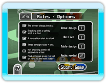

● Notes about Nintendo Wi-Fi Connection Matchups
Pressing  will not display the Pause Menu.
will not display the Pause Menu.
Pressing  will not display the HOME Menu.
will not display the HOME Menu.
● Friend Codes and Friend Rosters
You cannot play a matchup with a friend unless they are registered on your Friend Roster. Provide your friends with the friend code displayed on the Friend Roster Screen so that they can register you. You can also delete friend codes from your Friend Roster. You will not be able to play with friends whose friend codes you have deleted from your Friend Roster.
● Playing Against Friends
You can play a matchup against a friend registered on your Friend Roster.
You will not be able to play against a friend registered on your Friend Roster if they disconnect their Nintendo Wi-Fi Connection, or if they delete your friend code from their Friend Roster.
● Playing Worldwide Matchups
You can play games against players worldwide. Your opponent will be automatically selected.

● Rules
You cannot change game rules during Nintendo Wi-Fi Connection Matchups. There is also a time limit for each player's turn. If you do not complete your shot within the time limit, a foul is declared and control passes to the next player.